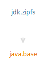

Module jdk.zipfs
Accessing a ZIP File System
The FileSystemsnewFileSystem
static factory methods can be used to:
- Create a ZIP file system
- Open an existing file as a ZIP file system
URI Scheme Used to Identify the ZIP File System
The URIscheme that identifies the ZIP file system is jar.
POSIX file attributes
A ZIP file system supports a file attributeview
named "zip" that defines the following file attribute:
The "permissions" attribute is the set of access permissions that are optionally stored for entries in a ZIP file. The value of the attribute is
Name Type permissions Set<PosixFilePermission>
null
for entries that do not have access permissions. ZIP file systems do not
enforce access permissions.
The "permissions" attribute may be read and set using the Files.getAttribute and Files.setAttribute methods. The following example uses these methods to read and set the attribute:
Set<PosixFilePermission> perms = Files.getAttribute(entry, "zip:permissions");
if (perms == null) {
perms = PosixFilePermissions.fromString("rw-rw-rw-");
Files.setAttribute(entry, "zip:permissions", perms);
}
In addition to the "zip" view, a ZIP file system optionally supports
the PosixFileAttributeView ("posix").
This view extends the "basic" view with type safe access to the
owner, group-owner,
and permissions attributes. The
"posix" view is only supported when the ZIP file system is created with
the provider property "enablePosixFileAttributes" set to "true".
The following creates a file system with this property and reads the access
permissions of a file:
var env = Map.of("enablePosixFileAttributes", "true");
try (FileSystem fs = FileSystems.newFileSystem(file, env) {
Path entry = fs.getPath("entry");
Set<PosixFilePermission> perms = Files.getPosixFilePermissions(entry);
}
The file owner and group owner attributes are not persisted, meaning they are
not stored in the ZIP file. The "defaultOwner" and "defaultGroup"
provider properties (listed below) can be used to configure the default values
for these attributes. If these properties are not set then the file owner
defaults to the owner of the ZIP file, and the group owner defaults to the
ZIP file's group owner (or the file owner on platforms that don't support a
group owner).
The "permissions" attribute is not optional in the "posix"
view so a default set of permissions are used for entries that do not have
access permissions stored in the ZIP file. The default set of permissions
are
defaultPermissions"
property described below.
ZIP File System Properties
The following properties may be specified when creating a Zip file system:| Property Name | Data Type | Default Value | Description |
|---|---|---|---|
| accessMode | String |
null/unset |
A value defining the desired access mode of the file system.
ZIP file systems can be created to allow for read-write or
read-only access.
accessMode property has no effect on reported POSIX file
permissions (in cases where POSIX support is enabled).
|
| create | String or Boolean |
false |
If the value is true, the ZIP file system provider creates a
new ZIP or JAR file if it does not exist. Specifying the create
property as true with the accessMode as "readOnly"
will cause an IllegalArgumentException to be thrown when creating
the ZIP file system.
|
| encoding | String |
UTF-8 | The value indicates the encoding scheme for the names of the entries in the ZIP or JAR file. |
| enablePosixFileAttributes | String or Boolean |
false |
If the value is true, the ZIP file system will support
the PosixFileAttributeView.
|
| defaultOwner | UserPrincipalor String |
null/unset |
Override the default owner for entries in the ZIP file system. The value can be a UserPrincipal or a String value that is used as the UserPrincipal's name. |
| defaultGroup | GroupPrincipalor String |
null/unset |
Override the default group for entries in the ZIP file system. The value can be a GroupPrincipal or a String value that is used as the GroupPrincipal's name. |
| defaultPermissions | Set<PosixFilePermission>or String |
null/unset |
Override the default Set of permissions for entries in the ZIP file system. The value can be a Set<PosixFilePermission> ora String that is parsed by PosixFilePermissions::fromString
|
| compressionMethod | String |
"DEFLATED" |
The value representing the compression method to use when writing entries
to the ZIP file system.
|
| releaseVersion | String or Integer |
null/unset |
A value representing the version entry to use when accessing a
multi-release JAR. If the JAR is not a
multi-release JAR, the value will be ignored and the JAR will be
considered un-versioned.
The value must be either the string "runtime" or represent a valid
Java SE Platform version number,
such as
|
Examples:
Construct a new ZIP file system that is identified by a URI. If the ZIP file does not exist, it will be created:
URI uri = URI.create("jar:file:/home/luckydog/tennisTeam.zip");
Map<String, String> env = Map.of("create", "true");
FileSystem zipfs = FileSystems.newFileSystem(uri, env);
Construct a new ZIP file system that is identified by specifying a path
and using automatic file type detection. Iterate from the root of the JAR displaying each
found entry:
FileSystem zipfs = FileSystems.newFileSystem(Path.of("helloworld.jar"));
Path rootDir = zipfs.getPath("/");
Files.walk(rootDir)
.forEach(System.out::println);
- Module Graph:
- 
- Since:
- 9
{kind=link}
-
Services
Provides